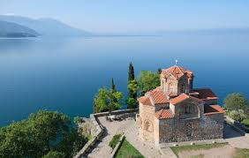

Ohrid

Ohrid is known for once having 365 churches, one for each day of the year, and has been referred to as the "Jerusalem of the Balkans".
1. The lake's existed for 2-3 million years
So you can tick ‘dip your toes in Europe’s oldest lake’ off your list. On the shore, the city of Ohrid itself – a small place of around 40,000 people – is one of the oldest human settlements in Europe and dates way back to the 7th century.
2. It’s home to over 200 types of animal and plant you won’t find anywhere else
From fish to flowering water plants, there are tons of species that are completely unique. And as one of the most diverse lakes in the world, it was named a UNESCO World Heritage Site in 1979.
3. There’s a replica of a Bronze Age village you can wander around
The Bay of Bones Museum shows what homes would have looked like here in 700 BC, with wooden huts built on stilts over the water.
4. Ohrid city once had 365 churches, one for every day of the year
Lots of them are still there, including the most visited one in North Macedonia, the Church of St John at Kaneo – which has beautiful frescoes and clifftop views across the lake.
5. There are more mountains here than in any other European country
If you love views of the peaks, this is the place – over 85% of North Macedonia is covered with them and Lake Ohrid is backed by the forest-covered Galičica mountain and national park.
6. The Cyrillic alphabet was invented around here
This series of 33 letters was created in Ohrid city in the 9th century. Fast-forward to now and it’s still the country’s official script, and over 250 million people around the world use it to write today.